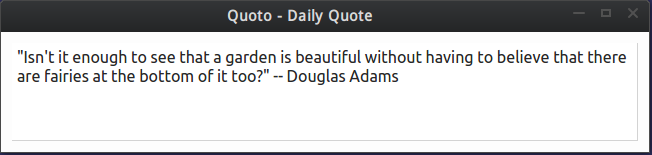

Quoto
Simple application which displays a Quote on regular intervals of time.
Features
- Same quote on a particular day
- Random quote everyday
- Quote fetched from my Goodreads' liked quotes
- Quoted displayed on a regular interval (3 hours interval)
Tools Used
- Python 3.4
- QtDesigner4
- PyQt 4
- feedparser (python module)
How?
A json file (local.json) is created having the following format, the relevance of each key is explained in the comments.
{
"date": "", # The current date
"update": "", # The last date when the number of pages of Goodreads' quotes are updated
"pages": , # Number of pages you have in the Goodreads' liked quotes
"pre_quo1": "", # Last day quote
"pre_quo2": "", # Last to last day quote
"today_quo": "" # today's quote
}
When the disp.py is run, it calls the main() function of fetch.py module. What this function does is, it checks if the local.json exists. If it doesn't then it creates it and then returns the quote, saving the current date, up-date, number of pages and the number of quotes on each page, today's quote. If it does then the update is checked against today's date. If the difference is more than 30 days then the data is updated else it goes to next step. In the next step the current date is checked if is today's date or not. If it is not then a page out of total pages is randomly selected followed by the random selection of a quote number. This quote is fetched and returned. If the current date is today's date then the same quote is returned which was used previously. Thus, no fetching was done from the Goodreads' server in this case. This above returned quote is sent to the QTextBrowser and displayed in a widget. Here the widget was designed using QtDesigner and quotes were fetched using feedparser which uses the RSS feed links of my Goodreads' liked quotes. Here, have a look at the GUI made,
Now, after this final script, I wrote a bash script which calls this above disp.py*. This step was to call the script at an hourly basis using cron jobs. Thus, now this quote is displayed each hour according to the above rules of new or same quote.
SR.